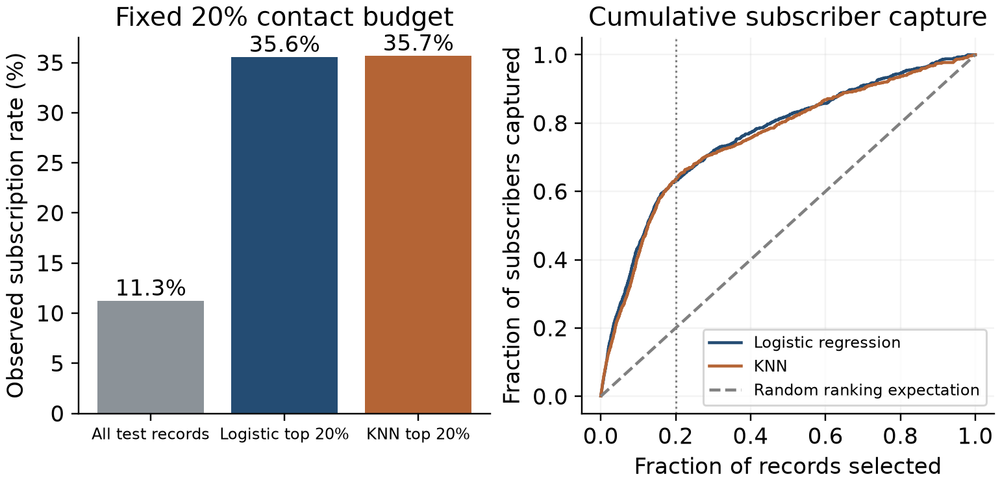

Individual coursework · Statistical learning
Prioritising subscription outreach
Which customers should a campaign contact when it can only reach 20% of the list?
Data and methods
I used 41,168 cleaned records to compare logistic regression, probit regression, a decision tree, and k-nearest neighbours. I used repeated cross-validation for model selection and evaluated rankings on a historical holdout.
What I found
At the same contact budget, the decision tree captured 598 of 927 subscribers (64.5%) and logistic regression captured 586 (63.2%). Logistic regression had the highest mean cross-validation average precision, while the decision tree had the highest historical test average precision.

Limitations
The holdout had been inspected before the final report. A later campaign would provide a stronger test of whether the ranking generalises.